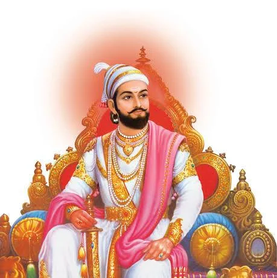
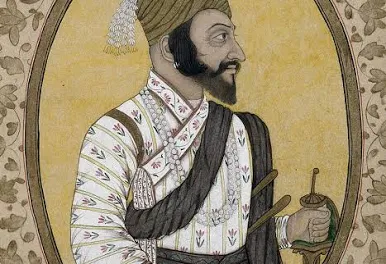

Chhatrapati Shivaji Maharaj was a great Maratha warrior and the founder of the Maratha Empire in western India in the 17th century. He is known for his innovative military tactics, administrative skills, and efforts to establish a competent and progressive civil rule with well-structured administrative organizations. Shivaji Maharaj's legacy continues to inspire people, and he is celebrated as a symbol of valor, leadership, and cultural pride.
shivaji maharaj was son of shahu maharaj

